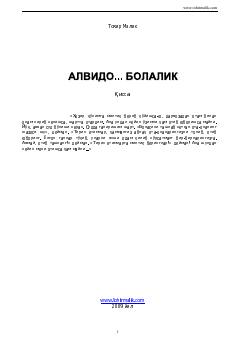

ʻBBolalik bilan xayrlashuv haqida o'zbek yozuvchisi Tohir Malikning asari.
"Alvido, bolalik" — o'zbek yozuvchisi Tohir Malikning asari bo'lib, bolalik davri va uning o'tib ketishi haqida hikoya qiladi. Asar www.tohirmalik.com saytida nashr etilgan. Kitob o'zbek tilidagi badiiy adabiyot namunasi sifatida o'quvchilarga taqdim etiladi.